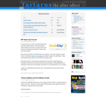

Projects
Tartarus
Tartarus: The After Effect is a community website and forum branched from SmileCity.
I administrate and webmaster the website on behalf of the owners.
The website consists of a blog, using WordPress and a forum using bbPress 2.
Most of my WordPress plugins have been to enhance the features of Tartarus.
bbPress Mobile

bbPress Mobile is a mobile interface to the bbPress forum software. It utilises the XML-RPC api and uses the XML-RPC for PHP library.
I created bbPress Mobile for my Tartarus project.
Source: https://launchpad.net/bbpress-mobile
Pirate Party of New Zealand
With a fair bit of personal interest in the movement, I decided to help The Pirate Party of New Zealand by setting up, designing and partially managing the site.
The website consists of three parts, the site, the forum and the wiki.
WordPress & bbPress
bbPress Post Toolbar
This is a toolbar for bbPress 2.0. It is a plugin to the WordPress platform.Download: http://wordpress.org/extend/plugins/bbpress-post-toolbar/
Source: https://github.com/master5o1/bbPress-Post-Toolbar
bbPress Ignore User
Allows are user to ignore any other user's posts or topics in a bbPress 2.0 forum. It is a plugin to the WordPress platform.Download: http://wordpress.org/extend/plugins/bbpress-ignore-user/
Source: https://github.com/master5o1/bbPress-Ignore-User
bbPress Forum Colours
Adds a colour identifyer to forums and shows it next to a topic title in topic listings.Source: https://github.com/master5o1/bbPress-Forum-Colours
bbPress Social
Social Media for bbPress topics right above the replies listings.Source: https://github.com/master5o1/bbPress-Social